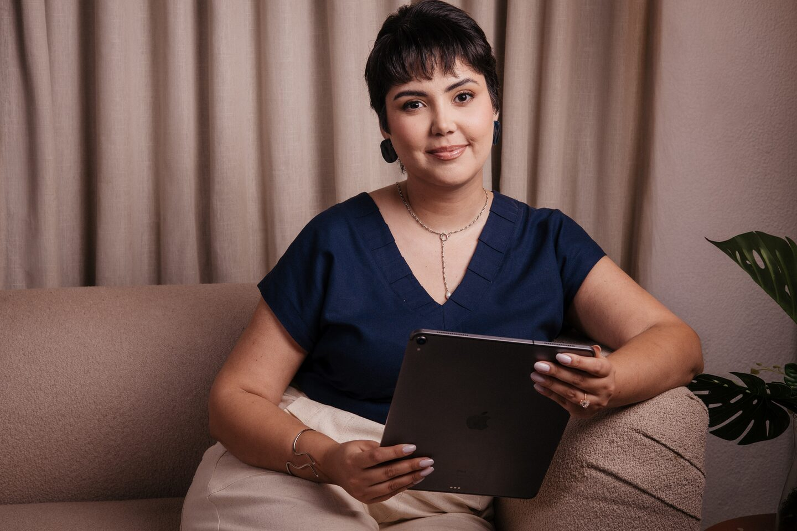
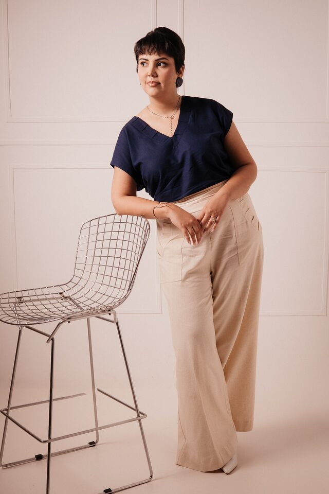
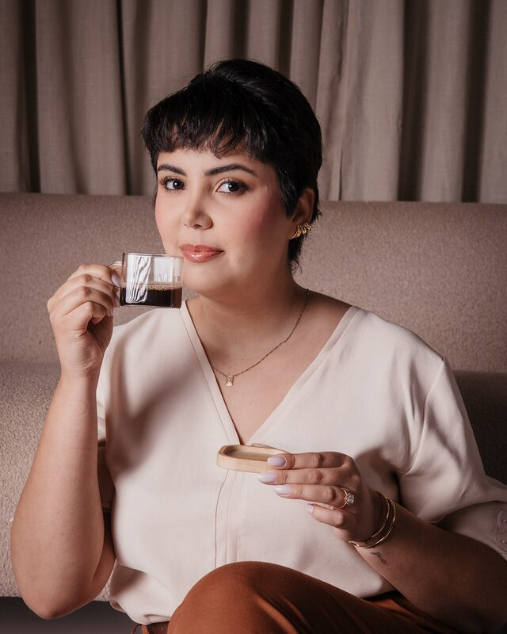

Pode deixar comigo.
Atendo os pacientes de clínicas e consultórios, da primeira mensagem à consulta confirmada, e cuido da rotina de empresários, da agenda aos e-mails e às viagens. Acompanho cada coisa até ela estar resolvida.
Conversar no WhatsAppA primeira conversa é para eu entender a sua rotina.
Avisos que você vai gostar de receber
- Consultas
Bom dia! As consultas de amanhã estão confirmadas, e a paciente que pediu para remarcar já tem um novo horário.
- Agenda
A sua agenda de hoje está organizada, e separei as três prioridades da manhã.
- Pacientes
Respondi as mensagens dos pacientes. Só uma precisa de você, e já deixei o resumo.
- Viagem
A hospedagem da sua viagem está reservada, e a planilha de despesas do mês está em dia.
Exemplos do retorno que você recebe ao longo do dia.

Quem está do outro lado da mensagem
Sou a Nathália Ganeo, Assistente Virtual. Trabalho de forma remota, em português e em inglês, em duas frentes com o mesmo peso: o atendimento para clínicas e consultórios, com destaque para a área estética, e a assistência executiva para empresários e para a organização do dia a dia. Com o inglês avançado, também reviso e traduzo textos entre o português e o inglês.
Meu jeito de atender começou a se formar antes do primeiro cliente. No curso de Publicidade e Propaganda, escolhi estudar, no trabalho de conclusão, o encantamento do cliente no modelo Disney, e levo esse cuidado para cada conversa.
Antes de trabalhar como Assistente Virtual, eu já cuidava de rotina administrativa e de atendimento. Na empresa da minha família, de administração de imóveis próprios, ajudo com questões bancárias, contratos, recibos e notas fiscais. E na loja de moda sustentável que tive em sociedade, todo o atendimento era virtual, pelas redes sociais e pelo WhatsApp Business.
Sou proativa, detalhista e responsável, e acompanho cada demanda até o fim. Quando chega um pedido que eu ainda não conheço, eu estudo, busco os recursos certos e entrego.
A pessoa precisa sair da conversa mais tranquila do que entrou.
É isso que levo do meu estudo sobre o encantamento do cliente para cada atendimento, seja com você, seja com os seus pacientes e clientes. No dia a dia, vira três hábitos:
Responder com clareza, sem deixar dúvida pelo caminho.
Olhar para a pessoa e para o problema dela, e não só para um texto pronto.
Acompanhar a conversa até a solução, e não só até a primeira resposta.
Quatro serviços, o mesmo cuidado
Atendimento para clínicas e consultórios, assistência executiva para empresários, atendimento para lojas de moda e beleza e revisão e tradução de textos. Dá para começar por um serviço e somar outro quando fizer sentido.
Eu cuido das conversas, você cuida da loja.
DestaqueModa e beleza
Antes de cuidar da sua loja, eu tive a minha.
Todo o atendimento era virtual, pelo Instagram e pelo WhatsApp Business, e quem respondia cada cliente era eu. Cada conversa respondida com atenção era uma chance de a pessoa voltar.
Moda, estética e maquiagem são áreas que eu amo. Na sua loja de roupas, de maquiagem ou de beleza, eu cuido de cada conversa pelo Direct do Instagram e pelo WhatsApp, do primeiro oi ao pós-venda.
Direct e WhatsApp em dia
Quem chama a sua loja recebe resposta rápida, com atenção e clareza, e nenhuma mensagem fica esquecida.
Na práticaAtendimento pelo Direct do Instagram e pelo WhatsApp Business, do primeiro contato até a compra.
Tamanho, troca e dúvidas comuns
Medidas, cores, prazos de entrega e trocas respondidos com as palavras que você aprovou, e quem está em dúvida recebe ajuda para escolher o tamanho.
Na práticaTextos combinados com você, da tabela de medidas à política de troca.
Pedidos acompanhados
Cada pedido fica anotado e acompanhado, e quem comprou recebe notícia da loja a cada etapa.
Na práticaPedidos organizados e um resumo no fim do dia, com as vendas encaminhadas e o que ainda depende de você.
Pós-venda com carinho
Uma mensagem depois da compra mostra cuidado e deixa a porta aberta para a próxima.
Na práticaMensagem de pós-venda e acompanhamento das trocas, no tom da sua marca.
Eu cuido das palavras, você cuida da mensagem.
Revisão
O seu texto, em português ou em inglês, sai claro, correto e no tom que você quer.
Na práticaE-mails, mensagens, documentos, apresentações e letras de música.
Tradução
Do português para o inglês, ou do inglês para o português, com naturalidade e sem cara de tradução automática.
Na práticaE-mails, mensagens para clientes, documentos e materiais de divulgação.
“Excelente profissional. O trabalho de revisão da letra em inglês para a minha música foi entregue muito rápido (no mesmo dia) e em total conformidade com o que solicitei. Recomendo.”
- Português e inglêsInglês avançado certificado (EF SET, nível C1).
- Trabalho remotoDe Campo Grande (MS) para onde você estiver, com as ferramentas que você já usa.
- Das 9h às 18hUm horário que se ajusta tranquilamente à necessidade de cada cliente.
Também ajudo com cerimonial online: planejamento de eventos, organização de chás de lingerie e outras comemorações, criação de brincadeiras, roteiros e cuidado com os detalhes.
Do primeiro oi ao dia a dia
Quatro passos, do primeiro contato à rotina andando sozinha.
Passo 1: A gente conversa.
Você me conta como está a sua rotina, ou a do seu consultório, e o que mais toma o seu tempo, pelo WhatsApp ou numa chamada de vídeo.
Passo 2: Você recebe uma proposta sob medida.
Mostro o que eu assumo, como vamos nos falar e o formato que faz sentido para você: por hora, pacote mensal ou uma demanda específica.
Passo 3: Eu organizo o começo.
Combinamos os acessos e os canais de contato. Eu me adapto às ferramentas que você já usa e começo pelo que mais pesa.
Passo 4: Você acompanha sem precisar cobrar.
Você recebe o retorno do que foi feito e do que precisa da sua atenção, sem precisar perguntar, e a rotina vai sendo ajustada junto com o seu momento.
No dia a dia, uso Google Workspace (Agenda, Planilhas, Documentos e Meet), Excel, Word, Zoom e WhatsApp, e aprendo rápido as ferramentas de cada cliente.
O caminho até aqui
- Atual
Assistente Virtual autônoma
Apoio a um empresário que atua em duas empresas, nas demandas profissionais e pessoais do dia a dia: reservas de hospedagem, documentos, planilhas de despesas e pesquisas pontuais. E organizo a rotina profissional e pessoal de uma cliente de assistência pessoal, com acompanhamento diário.
- Atual, meio período
Santos Ganeo Cia LTDA
Empresa familiar de administração de imóveis próprios. Colaboro com o atendimento, questões bancárias e contratuais, recibos e emissão de notas fiscais.
- 2023
Não Canso de Brechó
Loja de moda sustentável, negócio próprio em sociedade. Cuidei do atendimento ao cliente, todo virtual, pelas redes sociais e pelo WhatsApp Business.
Formação
- Formada em Publicidade e Propaganda (2015 a 2018), com trabalho de conclusão sobre o encantamento do cliente no modelo Disney
- Auxiliar Administrativo, Senac (2015)
- Inglês avançado, certificado EF SET nível C1 (2025)

Quem já deixou a rotina comigo
Palavras de clientes reais, publicadas com a autorização de cada um.
[DEPOIMENTO]
[DEPOIMENTO]
Um pouco do meu trabalho, na prática
O portfólio resume em poucas páginas o que eu faço e como eu trabalho, e o certificado mostra o meu nível de inglês.
Portfólio em PDF
Os serviços, o meu jeito de atender e como funciona o trabalho, para ler com calma ou mandar para quem também decide.
Baixar portfólio em PDFInglês avançado certificado
EF SET, nível C1, julho de 2025.
Perguntas frequentes
Ficou outra dúvida? Me chama no WhatsApp.
Como funciona o trabalho de uma Assistente Virtual?
Tudo é feito a distância. Combinamos as demandas, os canais de contato e os horários, e eu cuido do dia a dia, com retorno do que foi feito.
Qual é o seu horário?
Das 9h às 18h. E esse horário se ajusta tranquilamente à necessidade de cada cliente: é só me contar como é a sua rotina.
Como fica o sigilo das informações?
As informações dos seus pacientes e clientes ficam só com você. Combinamos juntos os acessos e os canais de contato, e eu trabalho com as ferramentas que você já usa.
Preciso estar na mesma cidade que você?
Não. O trabalho é todo remoto, então podemos trabalhar juntos de onde você estiver.
Como são definidos os valores?
Cada proposta é feita sob medida: por hora, pacote mensal ou demanda específica, de acordo com o que você precisa.
Você atende em inglês?
Sim. Tenho inglês avançado certificado (EF SET, nível C1), atendo em português e em inglês e também reviso e traduzo textos entre os dois idiomas.
Quais ferramentas você usa?
Google Workspace (Agenda, Planilhas, Documentos e Meet), Excel, Word, Zoom e WhatsApp. E me adapto às ferramentas que você já usa.

Oi, Nathália! Vi o seu site e quero conversar sobre a minha rotina.
Você ainda pode mudar o texto no WhatsApp antes de enviar.
- WhatsApp(67) 99823-4242
- E-mailnathganeo@gmail.com
- LinkedInlinkedin.com/in/nathaliaganeo
- Horário
Das 9h às 18h, ajustável à sua rotina